Baseline (default/unbatched entity path) vs each technique, at 3 entity-heavy pinned poses. Second image per variant is the abs-diff (ImageChops.difference, same method as scripts/ci/visual_gate.py). Diffs are EXPECTED for these techniques (billboards / composite textures) -- reported for Will to judge, not self-declared acceptable.
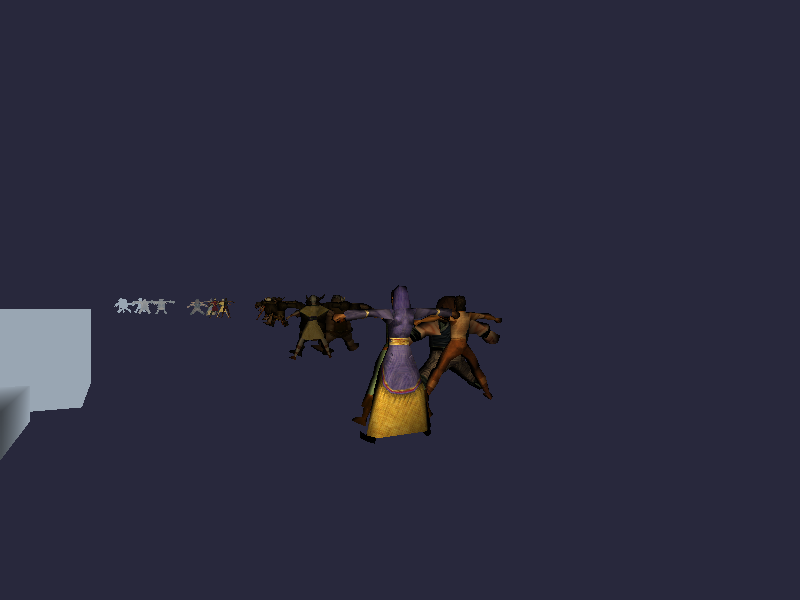
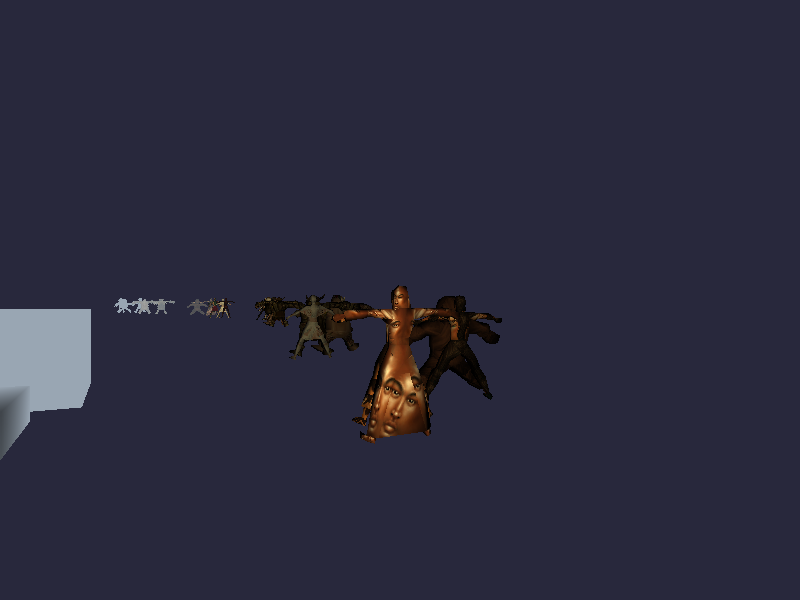
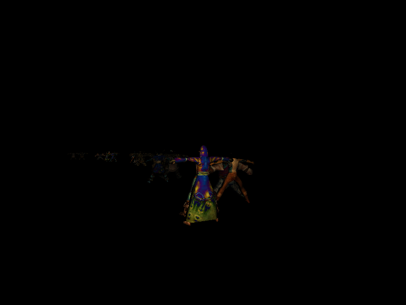
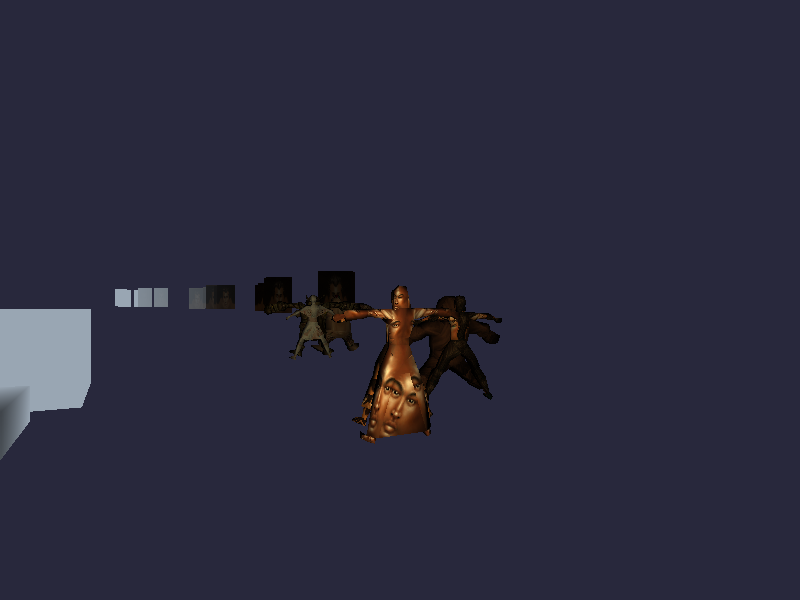
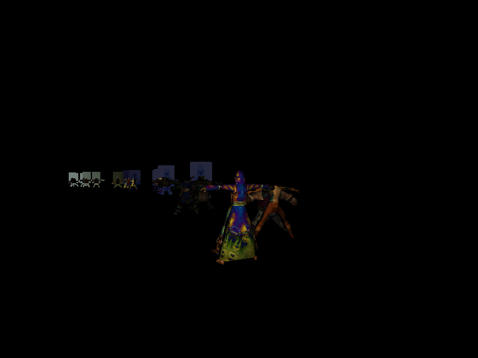
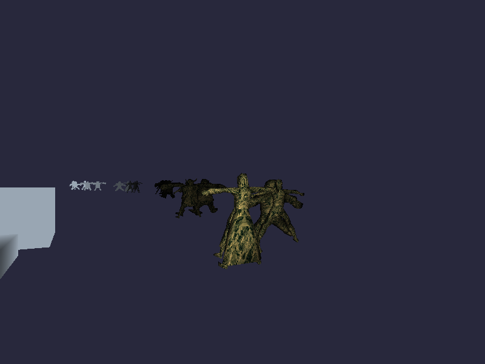
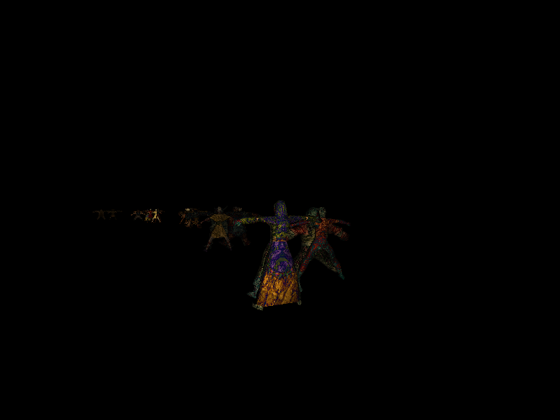
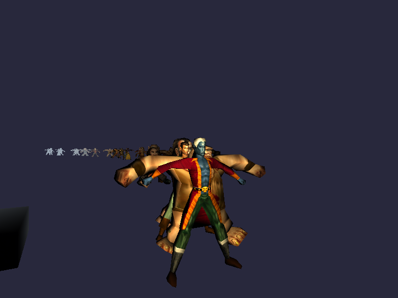
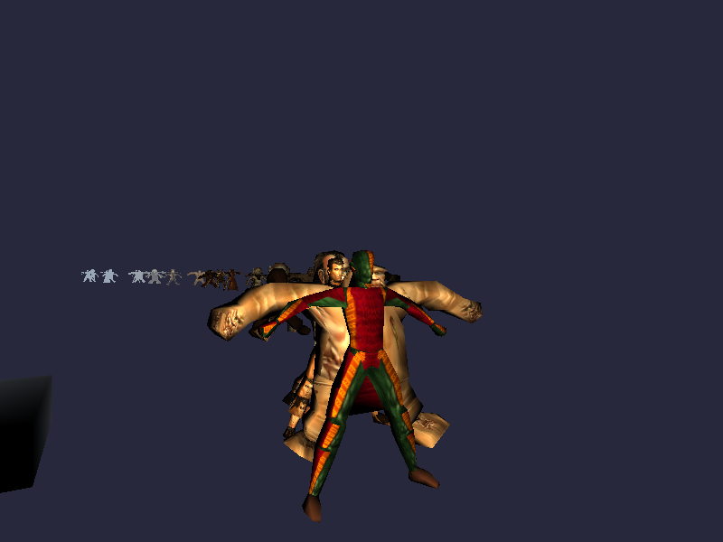
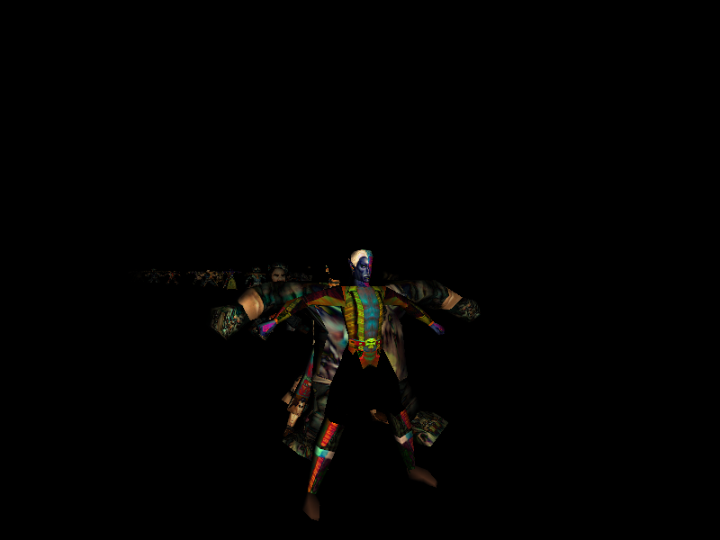
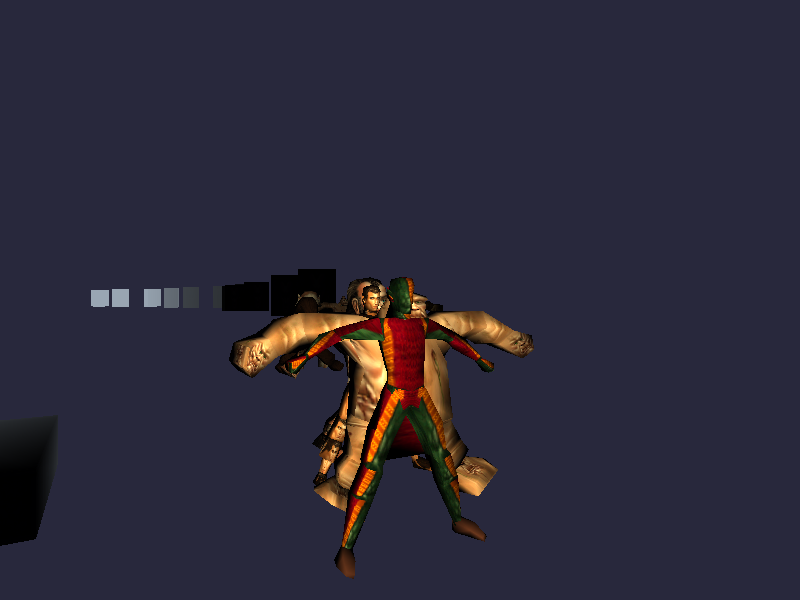
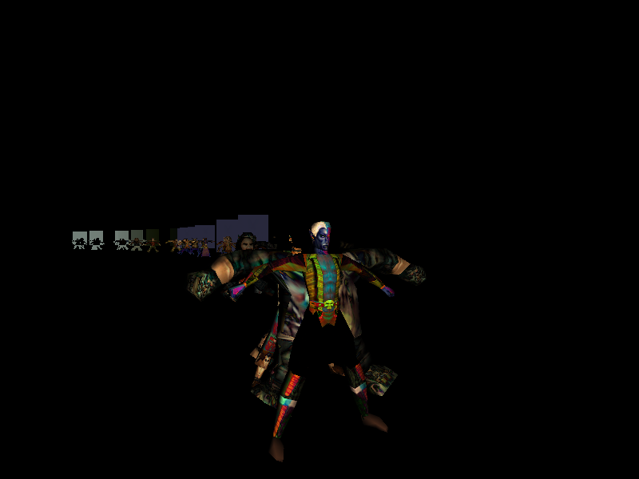
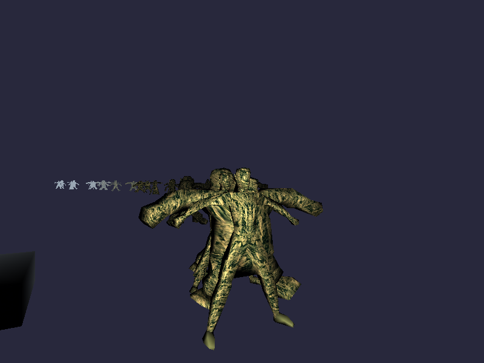
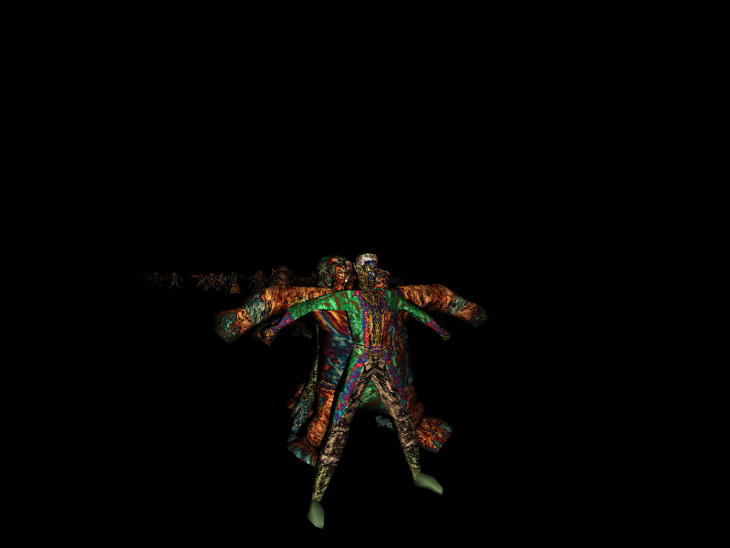
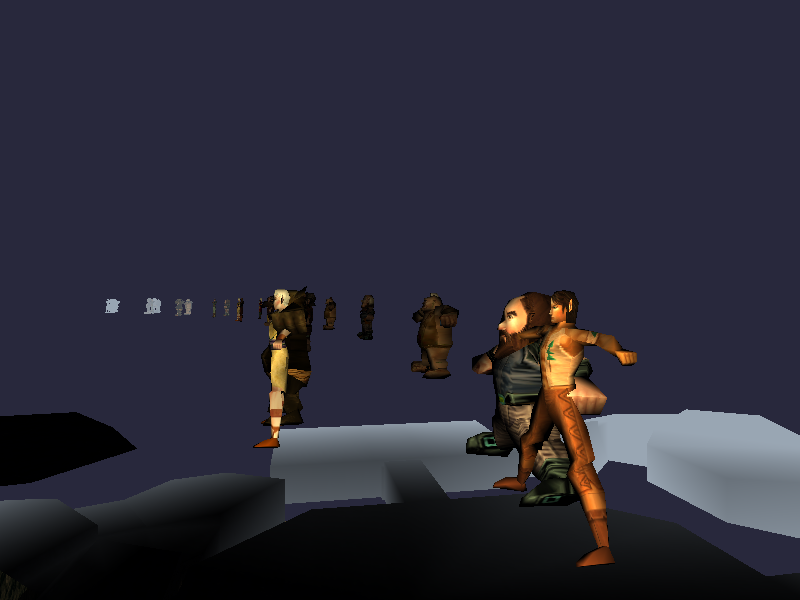
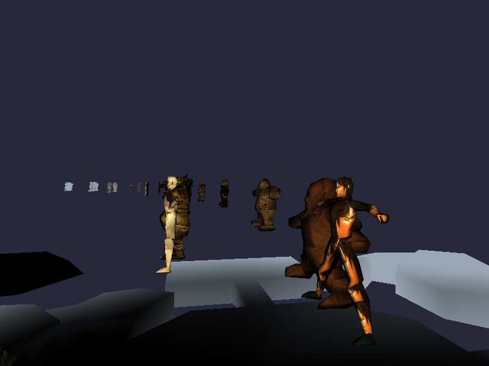
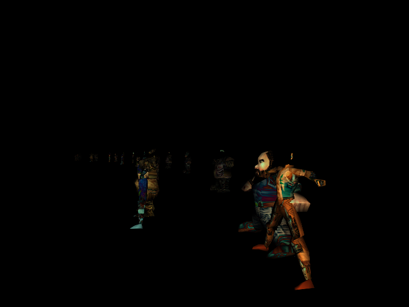
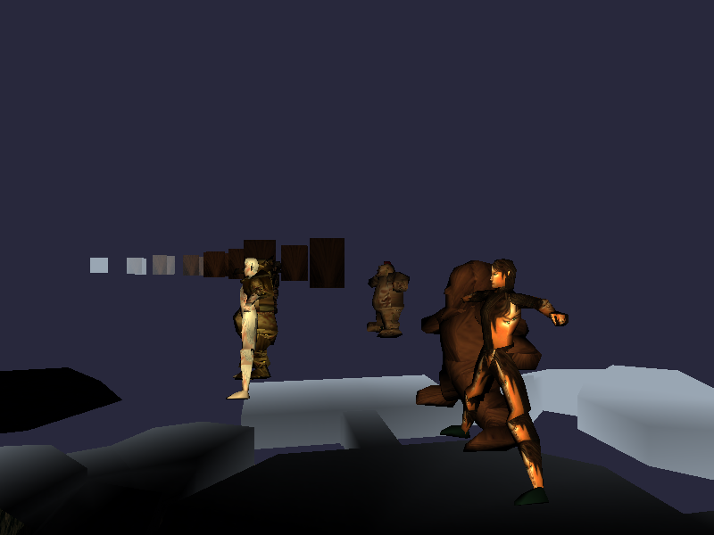
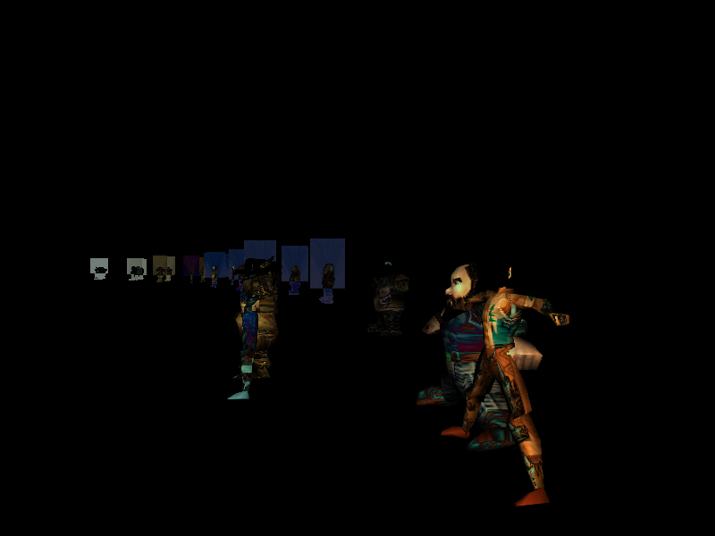
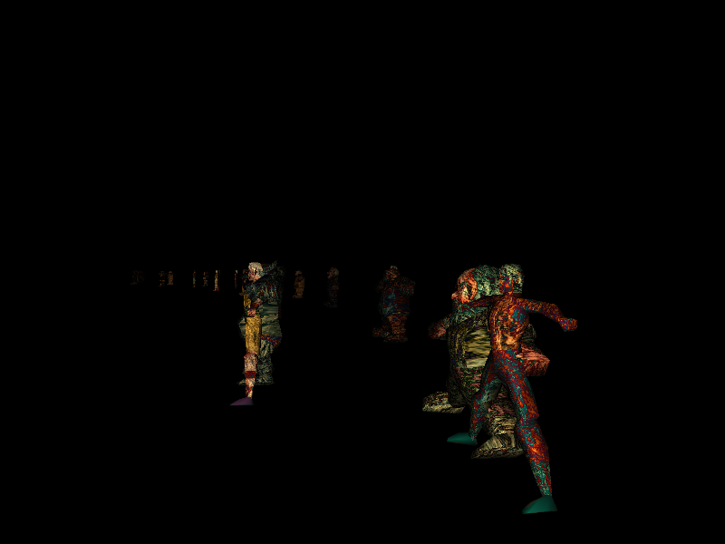
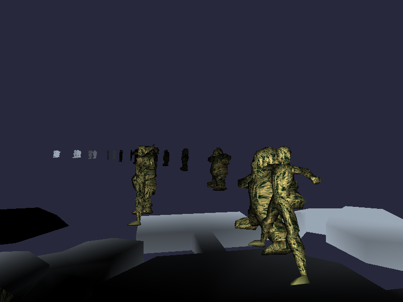